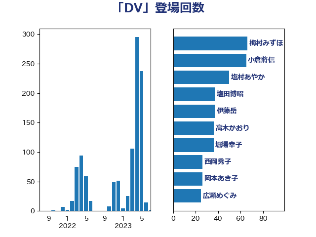

単語「DV」

| 嘉田由紀子 | 無所属 | 27 回 |
| 橋本聖子 | 無所属 | 25 回 |
| 道下大樹 | 立憲民主党 | 24 回 |
| 上川陽子 | 自由民主党 | 21 回 |
| 梅村みずほ | 日本維新の会 | 19 回 |
| 堀場幸子 | 日本維新の会 | 17 回 |
| 吉田統彦 | 立憲民主党 | 16 回 |
| 大口善徳 | 公明党 | 16 回 |
| 打越さく良 | 立憲民主党 | 16 回 |
| 野田聖子 | 自由民主党 | 16 回 |
| 丸川珠代 | 自由民主党 | 15 回 |
| 岸真紀子 | 立憲民主党 | 13 回 |
| 古屋範子 | 公明党 | 12 回 |
| 山添拓 | 日本共産党 | 12 回 |
| 井出庸生 | 自由民主党 | 10 回 |
| 伊藤孝恵 | 国民民主党 | 10 回 |
| 岩渕友 | 日本共産党 | 10 回 |
| 田村憲久 | 自由民主党 | 10 回 |
| 菅義偉 | 自由民主党 | 10 回 |
| 後藤茂之 | 自由民主党 | 9 回 |
| 福島みずほ | 社会民主党 | 8 回 |
| 西岡秀子 | 国民民主党 | 8 回 |
| 金子恭之 | 自由民主党 | 8 回 |
| 佐藤英道 | 公明党 | 7 回 |
| 塩村あやか | 立憲民主党 | 7 回 |
| 高木かおり | 日本維新の会 | 7 回 |
| 吉田とも代 | 日本維新の会 | 6 回 |
| 吉良よし子 | 日本共産党 | 5 回 |
| 国光あやの | 自由民主党 | 5 回 |
| 山本博司 | 公明党 | 4 回 |
| 西田実仁 | 公明党 | 4 回 |
| 佐々木さやか | 公明党 | 3 回 |
| 松野博一 | 自由民主党 | 3 回 |
| 田島麻衣子 | 立憲民主党 | 3 回 |
| 阿部知子 | 立憲民主党 | 3 回 |
| 一谷勇一郎 | 日本維新の会 | 2 回 |
| 倉林明子 | 日本共産党 | 2 回 |
| 塩田博昭 | 公明党 | 2 回 |
| 大西健介 | 立憲民主党 | 2 回 |
| 寺田学 | 立憲民主党 | 2 回 |
| 山本香苗 | 公明党 | 2 回 |
| 山際大志郎 | 自由民主党 | 2 回 |
| 岸田文雄 | 自由民主党 | 2 回 |
| 本村伸子 | 日本共産党 | 2 回 |
| 東徹 | 日本維新の会 | 2 回 |
| 津島淳 | 自由民主党 | 2 回 |
| 清水真人 | 自由民主党 | 2 回 |
| 田村智子 | 日本共産党 | 2 回 |
| 竹内譲 | 公明党 | 2 回 |
| 西村智奈美 | 立憲民主党 | 2 回 |
| 金村龍那 | 日本維新の会 | 2 回 |
| 音喜多駿 | 日本維新の会 | 2 回 |
| 高野光二郎 | 自由民主党 | 2 回 |
| 三原じゅん子 | 自由民主党 | 1 回 |
| 下野六太 | 公明党 | 1 回 |
| 中野洋昌 | 公明党 | 1 回 |
| 串田誠一 | 日本維新の会 | 1 回 |
| 仁木博文 | 無所属 | 1 回 |
| 今井絵理子 | 自由民主党 | 1 回 |
| 伊藤孝江 | 公明党 | 1 回 |
| 伊藤岳 | 日本共産党 | 1 回 |
| 加藤勝信 | 自由民主党 | 1 回 |
| 堤かなめ | 立憲民主党 | 1 回 |
| 塩川鉄也 | 日本共産党 | 1 回 |
| 守島正 | 日本維新の会 | 1 回 |
| 宮本徹 | 日本共産党 | 1 回 |
| 岡本あき子 | 立憲民主党 | 1 回 |
| 島尻安伊子 | 自由民主党 | 1 回 |
| 川田龍平 | 立憲民主党 | 1 回 |
| 市村浩一郎 | 日本維新の会 | 1 回 |
| 志位和夫 | 日本共産党 | 1 回 |
| 末松信介 | 自由民主党 | 1 回 |
| 東国幹 | 自由民主党 | 1 回 |
| 枝野幸男 | 立憲民主党 | 1 回 |
| 柴山昌彦 | 自由民主党 | 1 回 |
| 森まさこ | 自由民主党 | 1 回 |
| 森屋隆 | 立憲民主党 | 1 回 |
| 櫻井周 | 立憲民主党 | 1 回 |
| 武井俊輔 | 自由民主党 | 1 回 |
| 泉健太 | 立憲民主党 | 1 回 |
| 浅野哲 | 国民民主党 | 1 回 |
| 浜田聡 | NHK党 | 1 回 |
| 片山さつき | 自由民主党 | 1 回 |
| 牧島かれん | 自由民主党 | 1 回 |
| 田中健 | 国民民主党 | 1 回 |
| 田村まみ | 国民民主党 | 1 回 |
| 石井啓一 | 公明党 | 1 回 |
| 石川博崇 | 公明党 | 1 回 |
| 磯崎仁彦 | 自由民主党 | 1 回 |
| 福山哲郎 | 立憲民主党 | 1 回 |
| 福重隆浩 | 公明党 | 1 回 |
| 緒方林太郎 | 無所属 | 1 回 |
| 蓮舫 | 立憲民主党 | 1 回 |
| 赤池誠章 | 自由民主党 | 1 回 |
| 逢沢一郎 | 自由民主党 | 1 回 |